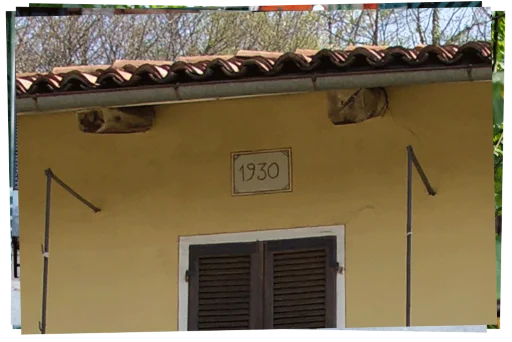
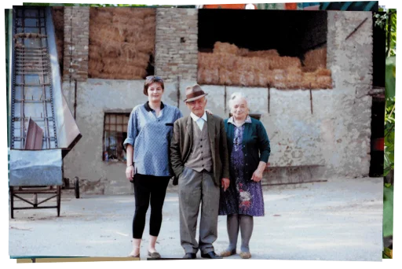
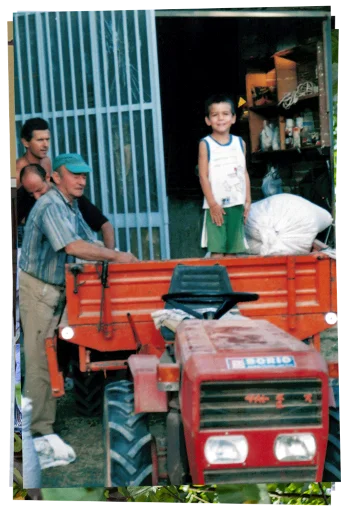
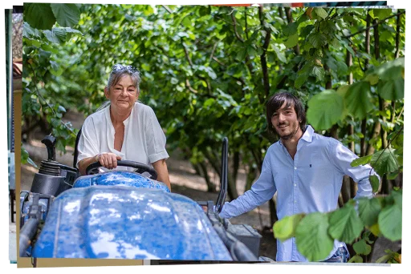

UNSERE GESCHICHTE
Alles begann damit, dass Luigi, genannt "il paneturot" (der kleine Bäcker) und Urgroßvater von Andreas, seinen Beruf als Bäcker aufgab, um sich der Bewirtschaftung seines geliebten Landes rund um das Haus in Serravalle Langhe zu widmen, das von seiner Frau Teresa gepflegt wurde. Damals war das Land hauptsächlich mit Weizen, Mais und Viehfutter bepflanzt, und es gab einige Reihen von Weinstöcken, aus denen Wein für die Familie gekeltert wurde. Damals war der Haselnussanbau auf kleine Grundstücke beschränkt, die besonders steil und zerklüftet waren und auf denen nichts anderes angebaut werden konnte.

Detail der Fassade mit Angabe des Baujahres

Luigi und Teresa mit ihrer Enkelin Loredana
In den 1960er Jahren beschlossen Luigi und sein Sohn Giovanni, den kleinen Weinberg auf dem Grundstück hinter dem Haus durch einen Haselnusshain zu ersetzen. Die Haselnussernte war damals noch reine Handarbeit und damit anstrengend und anspruchsvoll. Gleichzeitig war es auch ein unvergessliches Familienerlebnis, denn viele Verwandte wurden zur Hilfe gerufen, so dass es ein Anlass zum Feiern und Lachen war. Teresa gab ihr Bestes in der Küche und bereitete fantastische Gerichte zu, insbesondere ein Ragout, dessen Duft sich im ganzen Haus verbreitete und denjenigen, die diese Jahre miterlebten, in ewiger Erinnerung bleibt.
Diese Gewohnheiten änderten sich jahrelang nicht, bis 1994 die Flutkatastrophe, die das Gebiet heimsuchte, auch unsere Felder nicht verschonte und die Arbeit eines ganzen Lebens vernichtete. Bei dieser Gelegenheit beschloss Giovanni, genannt Gianni und Andreas' Großvater, an dieses Land zu glauben, indem er neues Land kaufte und neue Haselnuss-Setzlinge anbaute. Die Dorfbewohner sahen ungläubig zu, wie Gianni unermüdlicher Einsatz mit der unschätzbaren Hilfe seiner Frau Carla vollendet wurde.

Giovanni mit Schwiegersohn Flavio und Enkelsohn Andreas

Loredana und ihr Sohn Andreas
Das Glücksspiel von Gianni und Carla ist geglückt: Sie haben es geschafft, den Wert ihres Grundstücks trotz allem und jedem zu steigern. Doch damit nicht genug der Erfolge: Sie konnten die Prinzipien, die Luigi und Teresa vor ihnen leiteten, an ihre Tochter Loredana und mit ihr an ihren Enkel Andreas weitergeben. Derselbe Enkel beschloss, in diese Ländereien zu investieren, immer getrieben von denselben Werten: Respekt vor der Natur und Liebe zum Land. «Obwohl ich meinen Urgroßvater Luigi nicht näher kennenlernen konnte, erkenne ich ihn jeden Tag wieder, wenn er von seinen beiden jahrhundertealten Bäumen aus über unsere Arbeit wacht, die das Wesen dieser Tätigkeit ausmacht: Werte, die so stark sind, dass sie ein Jahrhundert der Geschichte überdauern.»
Azienda agricola Andreas Morra | P. iva 03815860048
Via Monastero, 1, Loc. Quazzo, 12050 Serravalle Langhe CN
Telefon: +39-3279947784 | Komm. Ref.: +39-3331601545
e-mail: a.agricolamorra@gmail.com


Copyright 2021 - Alle Rechte vorbehalten | Erstellt von Pietro Cagnasso | Foto von Giacomo Gatto